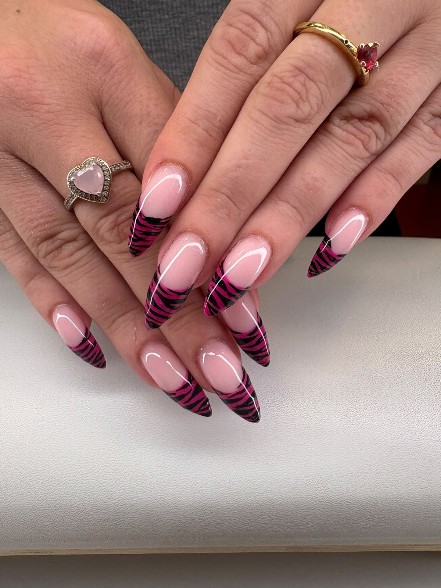
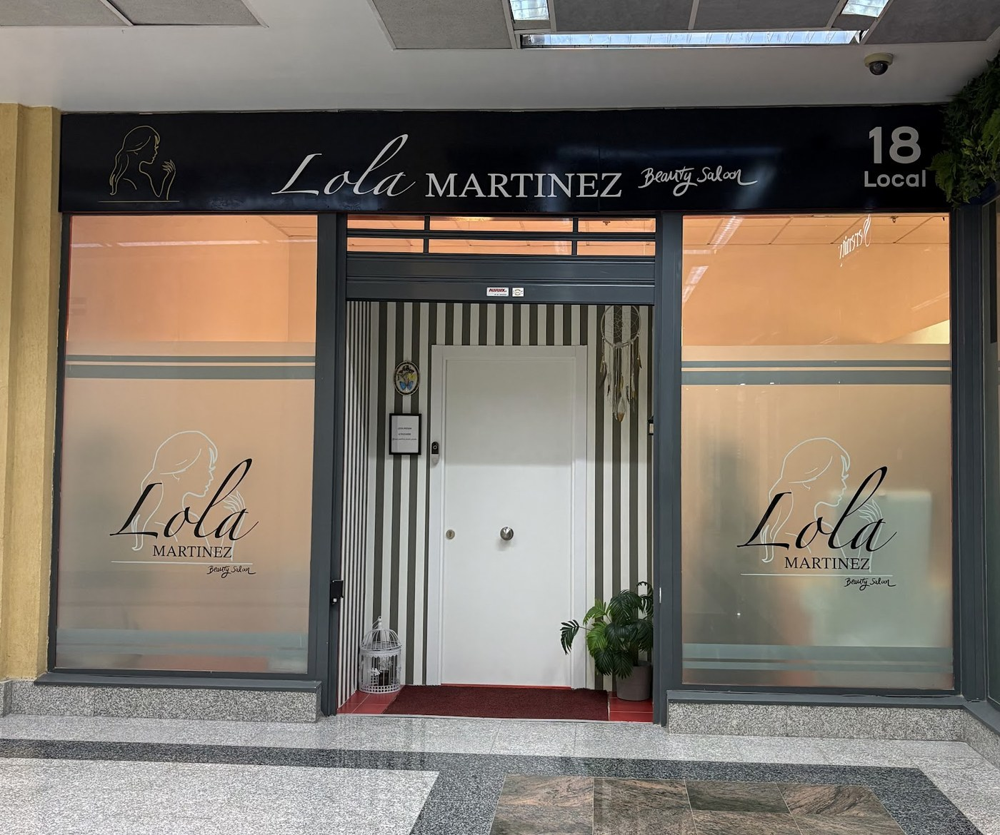
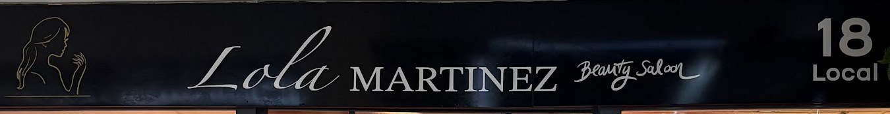
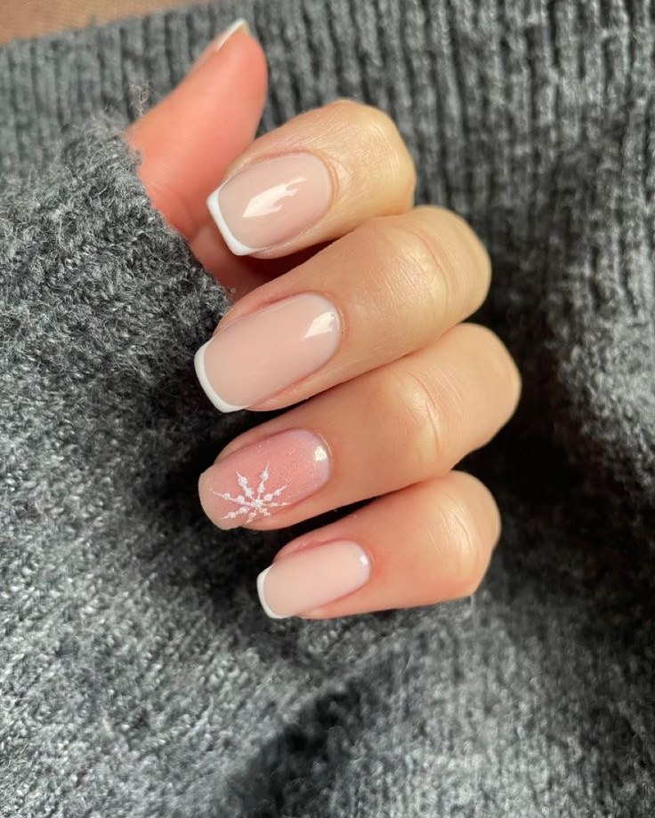
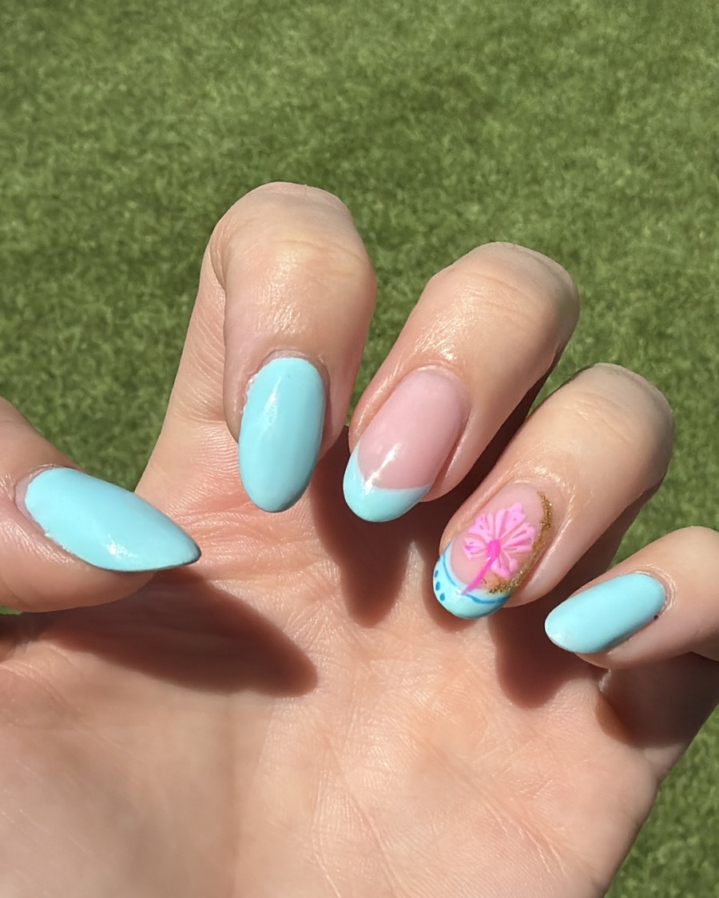
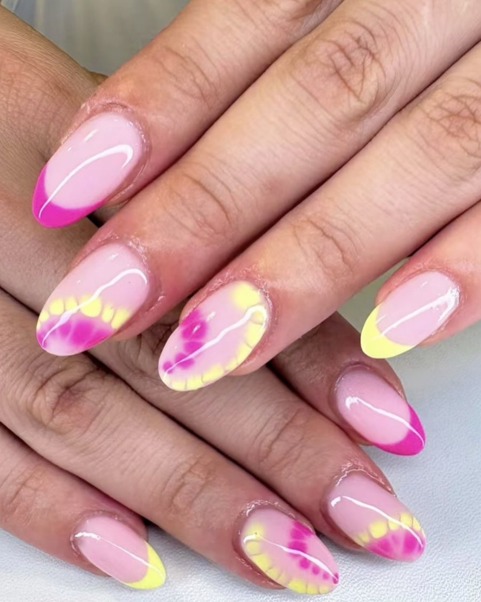
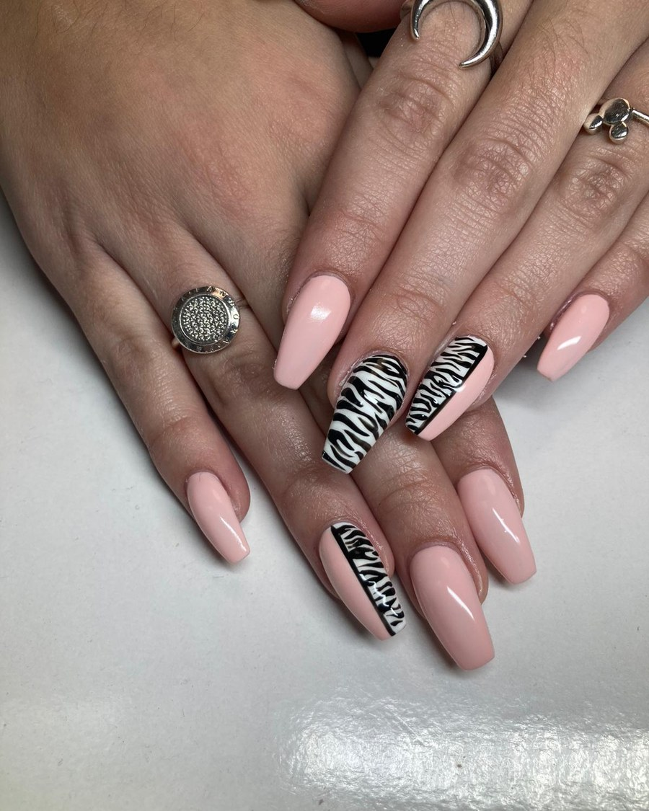
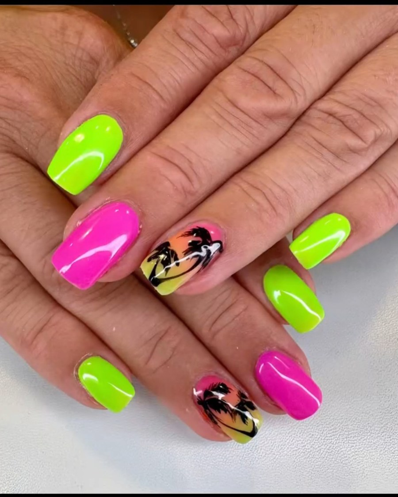
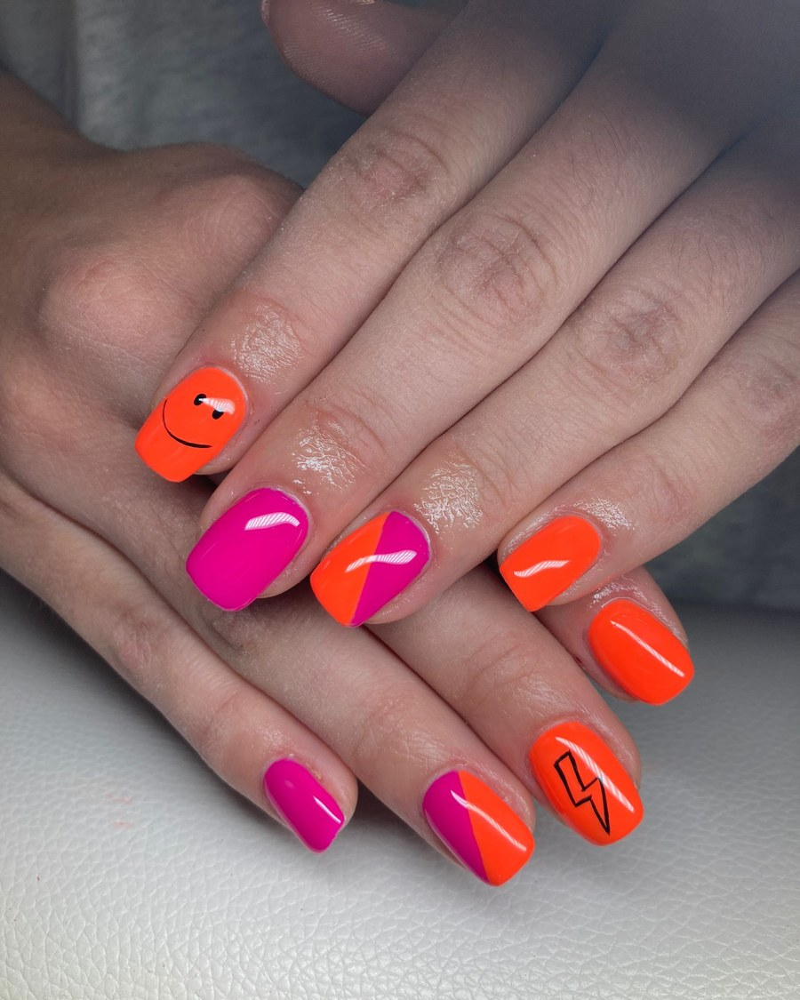

Un salón pequeño y cuidado en la Avenida de las Acacias, en Cubas de la Sagra. Manicura, esmaltado semipermanente, uñas de gel y diseños hechos a mano, con cita previa y sin prisas. Trabajan con productos que cuidan el lecho ungueal: primero la salud de la uña, después el diseño.

Lola Martínez Beauty Saloon está en la Avenida de las Acacias, en Cubas de la Sagra. Es un salón de los de siempre, de los que se hacen un nombre por el boca a boca: clientas que llevan más de diez años sentándose en la misma silla y que siguen recomendándolo a sus amigas.
Detrás está Lola, que atiende personalmente cada mano, y desde hace poco se ha sumado al equipo Aitana, que se encarga también del laminado y el diseño de cejas. Aquí no se trata de poner una capa de color y correr: se cuida el lecho ungueal, se trabaja con productos que no castigan la uña natural y el resultado aguanta.

Esto es lo que puedes hacerte en Lola Martínez Beauty Saloon. Si no sabes por dónde empezar, escríbenos con una foto de lo que te gusta y te decimos cómo lo haríamos.
Manicura completa con esmaltado semipermanente de larga duración. Cutícula cuidada, forma a tu gusto y un acabado que aguanta semanas.
Extensión y esculpido para dar largo y resistencia a la uña, con la forma que pidas: almendrada, cuadrada, stiletto o la que mejor te siente.
Florales, encaje, animal print, francés, neón, pedrería… Cada diseño se pinta a mano, así que se hace como lo imaginas.
Uñas mordidas, débiles o castigadas: se trabaja la uña para dejarla fuerte y natural. Con productos que no dañan el lecho ungueal.
Laminado, perfilado y diseño de cejas a cargo de Aitana. La ceja ordenada que enmarca la mirada sin que se note el trabajo.
Retirada del material sin dañar la uña, reparación de una pieza rota y cambio de diseño cuando te apetezca otro.
Mándanos una foto por WhatsApp y te decimos qué servicio encaja mejor con tu uña y cuánto tiempo necesita. La disponibilidad y los precios se consultan directamente con el salón.
Lo que más repiten sus clientas en Google no es el color: es que las uñas siguen sanas. Ese es el punto de partida de todo lo que se hace en el salón.

Fotos reales de manicuras, esculpidos y diseños salidos de este salón. Del natural más discreto al neón más atrevido: el diseño lo eliges tú.






Fotos: ficha de Google del salón.
43 reseñas en Google. Ninguna por debajo de cinco estrellas.
Lola es una gran profesional, trabaja como ninguna: atenta, perfeccionista, puntual, trato excepcional… y ahora con la llegada de Aitana son el mejor equipo. Local precioso, fácil aparcamiento, cercano y acogedor. El servicio de uñas dura hasta el mes siguiente sin dañarse.Nazaret Sánchez García
Me encanta cómo trabaja Lola. Hace más de 10 años que la conozco y me hago las uñas con ella, y puedo decir que es una gran profesional. Sus diseños son originales y siempre a la última.M. Carmen
Es la primera vez que me hacía las uñas con Lola y no puedo estar más contenta. Llegué casi sin uña porque me las muerdo y salí viéndome unas manos totalmente diferentes, súper naturales.Laura JM
Reseñas publicadas en Google por clientas del salón.
Sí. Se trabaja siempre con cita previa, para poder dedicarle a cada uña el tiempo que necesita. Escríbenos por WhatsApp o llama al 679 154 490 y buscamos el hueco que mejor te venga.
Es lo que más destacan sus clientas: el servicio aguanta hasta el mes siguiente sin dañarse, porque el trabajo se hace sobre una uña sana. La duración exacta depende de cada uña y de cómo la cuides en casa.
Depende del servicio y del diseño: no es lo mismo una manicura con semipermanente que un esculpido con decoración a mano. Escríbenos por WhatsApp con lo que quieres y te decimos el precio sin compromiso.
En la Avenida de las Acacias, en Cubas de la Sagra (Madrid). El aparcamiento por la zona es fácil, algo que sus clientas mencionan mucho en las reseñas.
Se trabaja con cita previa. Escríbenos por WhatsApp, cuéntanos qué te apetece y buscamos día y hora.